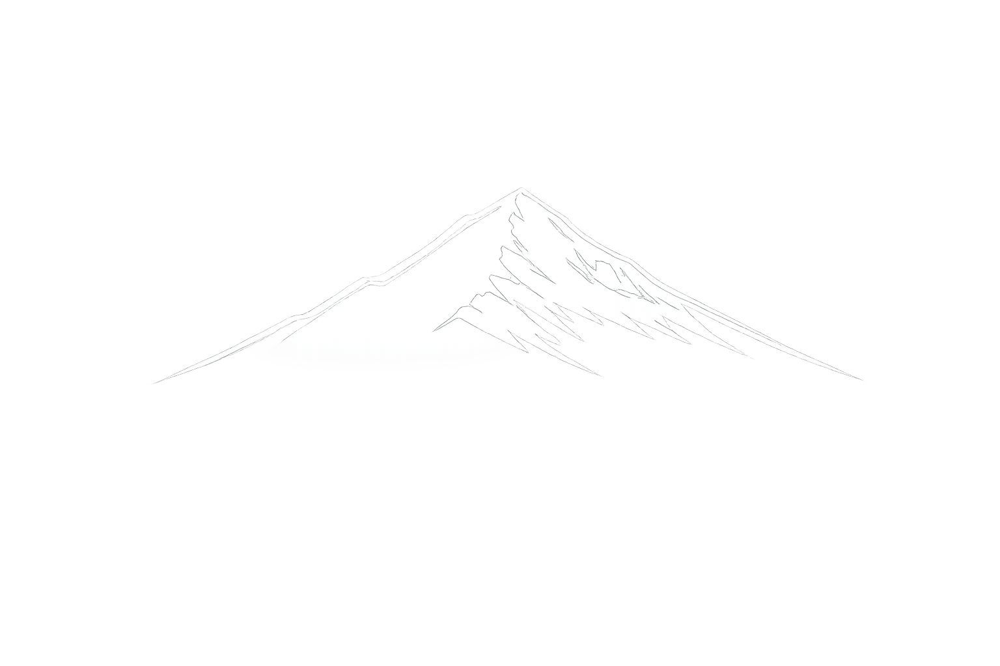

You've Reached the Summit
From discovery to growth — a clear path with no black boxes. Ready to start the climb?
Start Your JourneySummit Ridge — 12,033 FT
Grow
Launch is just the beginning. We provide ongoing support, optimization, and expansion as your business scales. Performance data drives every decision — we refine what's working, fix what isn't, and help you identify the next opportunity to grow. We're a long-term partner, not a one-time vendor.
What's Included
- Ongoing performance monitoring and analytics
- Continuous SEO and marketing optimization
- Feature enhancements and platform updates
- AI workflow refinement and expansion
- Monthly performance reports with actionable insights
- Priority support and strategic planning sessions
High Camp — 9,464 FT
Build & Launch
This is where the plan becomes real. Development, marketing systems, and automation are built and deployed with full visibility at every stage. You see progress as it happens — not just a big reveal at the end. We iterate with your feedback so the final product is exactly right.
What's Included
- Custom development sprints with regular demos
- Quality assurance and cross-device testing
- Marketing system setup and content deployment
- AI automation configuration and integration
- Launch checklist and go-live coordination
- Post-launch monitoring and issue resolution
Timberline — 6,883 FT
Design
With a clear understanding of your business, we architect a technology strategy tailored to your size, your customers, and your budget. Every recommendation is practical — nothing speculative, nothing you don't need. You see the full plan before a single line of code is written.
What's Included
- Technical architecture and system design
- User experience wireframes and flows
- Brand and visual direction
- Marketing and SEO strategy outline
- AI and automation opportunity mapping
- Project timeline, milestones, and transparent pricing
Base Camp — 4,325 FT
Discover
Every engagement starts with listening. We learn your business model, your customers, your goals, and the gaps standing between where you are and where you want to be. No jargon, no assumptions — just an honest assessment of what technology can do for you right now.
What's Included
- In-depth business and goals interview
- Current technology and workflow audit
- Competitor and market landscape review
- Identification of quick wins and high-impact opportunities
- Stakeholder alignment session
- Written discovery summary and recommendations
Base Camp
Your Climb Starts Here
Four steps to the summit. Scroll up to begin the ascent.